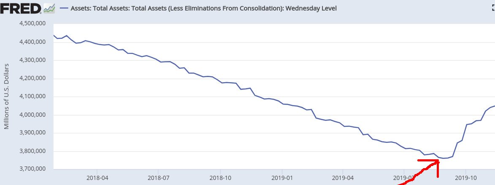
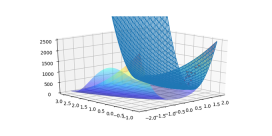

Week 47
Reminder: The largest software project ever created by mankind, Linux, was not built using object-oriented programming. This ain't the 90s. If it was, OO would be Zima.
OO is helpful in some cases, but also grossly misused. I wish it didn't exist so ppl would not try to overengineer unreadable, unmaintable code.
Sounds like Americans can be prowar under the right conditions. Clinton wanted to look strong, and could sell that to voters.
Long-term result? Not so good. Thanks to Clintonism, slave markets are back in Libya.
"In the middle of the 1992 New Hampshire primary campaign, when candidates were working twenty-hour days and not a minute was unscheduled, Clinton took a break to fly back to Arkansas in order to preside over the lethal injection of a convicted murderer named Ricky Ray Rector. Rector was so profoundly brain damaged from a self-inflicted gunshot wound that it’s not clear he knew he was about to die. After finishing his final meal, Rector asked the guards if he could save his dessert for later. Rival campaigns denounced the execution as inhumane. Clinton ignored them, and in November he won the general election.
The lesson was clear, and Clinton as president soon applied it to foreign policy. When he took office, Clinton inherited a several-thousand-troop humanitarian mission in Somalia, first deployed by President Bush. Clinton didn’t simply continue the mission, he expanded it, deploying hundreds of U.S. Special Forces to battle Somali warlords. Clinton withdrew American forces only after nineteen U.S. troops were killed. Criticism came not from liberals in his own party, but from Republicans.
The experience was painful, but it did not halt future foreign interventions. In 1994, Clinton dispatched Marines to Haiti in order to topple the regime there. The following year, Clinton sent airpower to intervene in the Bosnian War. He later deployed more than sixteen thousand troops to the region. In 1999, the United States bombed Yugoslavia as part of the Kosovo War, and again, thousands of troops arrived as peacekeepers in the aftermath. Clinton sent cruise missiles into both Sudan and Afghanistan as well.
Clinton’s most militant posture was reserved for Iraq, which the U.S. military bombed numerous times throughout his presidency. By the end of Clinton’s second term, the United States was bombing Iraq an average of three times a week, at the cost of more than $1 billion a year" -- Carlson, Ship of Fools
It is popular because Bernie made it popular.
Plus MM's own documentary Sicko helped in this regard. So he showed leadership.
"Michael Moore: M4A is popular"
Bruce Willis' mom is Kraut, like off the boat speaka full-blown Kraut.. BW's childhood was shortly after the end of WWII, mom is German, so they were apparently harrassed little bit, called names, the "N-word" dropped on.. A somber BW comments in an interview now "it was racism, really...". He said this in a such soft understated tone of his, it was hilarious..
"Good artists copy, great artists steal" -- Picasso
And he feels right at home in the Democratic Party.
While activists are thrown out of courtrooms where he is present.
Keep the status quo - it's great.
"George E. Norcross .. is an American businessman and a Democratic Party leader in New Jersey. Norcross is executive chairman of Conner Strong & Buckelew, an insurance brokerage firm"
"If there’s a poster child for everything Altman says is wrong with New Jersey politics, it’s Norcross. The executive chairman of insurance brokerage Conner Strong & Buckelew is regarded as one of the most powerful people in New Jersey. In recent months, he’s faced allegations, reported by WNYC and ProPublica, that he manipulated New Jersey’s controversial tax-incentive program to benefit his companies and affiliated organizations in Camden to the tune of $1.1 billion"
Right - they could even extract space tech from him if he has been captured badly enough. If US wants to keep its lead in space, I'd watch out who is in the list of favored companies. He could take from NASA, then the Chinese take from him.
"@georgia_orwell_
Elon Musk’s connection (capture?) by China has concerning implications for national security. Furthermore, any CEO of a US company should be questioning the ethics of expanding business with China, as we learn more about what is going on in the Xinjiang region and HK"
"A recent study by the nonpartisan Congressional Research Service shows that nearly 80 percent of the maximum $7,500 federal tax credit for electric vehicles now goes to families earning more than $100,000"
Face of the moon is full of holes, bcz of small meteors. What if one hit you while u r on the Moon? No atmo no protection. U'd get it right on the head bro..! :|
Besides stuff that works and known it works that is passed down, I care nothing abt the past. All the historical buildings could collapse, I would not bat an eye.
I dont think ppl want to live with so much of this shoddy, crypty "history" either. Why would Egyptians build an entire new Cairo outside the 'old' Cairo now? Dont they loove their history? No. Noone gives a shit. Some f--ing billionaire (of his time) built some shoddy structure (yes the pyramids, they do suck) with slave labor, why should anyone be forced to live with this thing, forever?
“If I had asked people what they wanted, they would have said faster horses.” -Henry Ford
— Keith McCullough (@KeithMcCullough) November 18, 2019
In TR case nation-state was inevitable, the collapse of the "Otto" was a natural result of its decay. Now it's time to tune; fixing the narrative, admitting to past mistakes, and handle problems within borders (they all come from within the borders).
The narrative defines how the state sees its citizens and how it will act towards them. So broad stupidity at this level needs urgent care, sadly a chronic condition in Russia, Tiggerland and similar places.
Culture is not narrative. The latter can be changed, and quite fast.
What do you do when national narrative is moronic? You have to fix it. Otherwise, anyone who is generating serious thought on national level will dismiss it. And you don't want these people's dismissal bcz it creates a distance between thought leaders and the state. Plus it disturbs the newcomers into the fold from the periphery, they'll feel like a dumbass when they arrive and find out central narrative is not taken seriously.
(The transmission of the NN is kind of like the telephone game - but in reverse. As the message gets to the edges it gets stronger, not weaker. The poor sod at the end of the line believes the shit, and believes hard. Exactly as it's written in the beginning of the line. In the center, ppl are much more fluid with NN, especially if it is moronic)
So be truthful. That is the best strategy.
There are methods that can update the Hessian during min opt procedure instead of recalculating it from a new quad approx at each new point. Nice. Even starting from ident matrix they work.
Mysterious income.. as in mystery meat. What a sausage factory.
19Q3 S&P 500 earnings are expected to decline 0.4%. 461 companies reported.
Trump approval 41.2% disproval 54.4% net = -13.2%. It returned to its boring previous (low) state.
"Sydney blanketed in hazardous smoke from bushfires"
@ByDonkeys
EXPOSED: Guess who used taxpayer funds to host the lavish launch of a think tank campaigning to let American corporations run NHS hospitals? Yes, Boris Johnson.
"@ShayKhatiri
During its first 24 hours, it's already been the most violent protests in decades, if not ever. 1979 revolution did not reach this level of violence...
Protestors are torching the flag of the Islamic Republic, taking down and torching statues and pictures of Khomeini and Khamenei, and torching gas stations and banks (all banks are either public or privately owned by regime leaders)"
Woha.
Jesus! An armoured vehicle of the #HongKong police tries to break into the Poly University gets literally bombarded with molotov cocktails pic.twitter.com/NDybGIXNIs
— Thomas van Linge (@ThomasVLinge) November 17, 2019
They're never getting out of those settlements short of a war. Give Gaza to Egypt, everywhere else one-state solution. Pals become 1st class citizens.
"U.S. softens position on Israeli settlements"
Big news on the recent (re)discovery of eigenvector calculation from eigenvalues.. This dude wrote the code in a fringe language. Here is one in Py.
import numpy.linalg as lin
def evec_from_eval(A, i, j):
lam, v = lin.eig(A)
n = A.shape[0]
s = list(range(n))
s.remove(j)
o = A[s,:]
lam2, _ = lin.eig(o[:,s])
left = np.prod([lam[i] - lam[k] for k in range(n) if k!=i])
right = np.prod([lam[i] - lam2[k] for k in range(n-1)])
newval = right/left
return newval
A = np.random.rand(10,10)
VV = A * (A.T)
eval,evecs = lin.eig(VV)
i,j=2,4
print (evec_from_eval(VV, i, j))
print (evecs[j,i]**2)
0.05858822705334258
0.05858822705334358
FDR did deliver, helped a lot of people, and they voted for him until he died.
They will be whereever the f#$k you lead them to be at.
That means leadership needs to make a decision to present a sustainable palette of political choices. A strong left position that alternates with right, back and forth. Until then ppl will feel pain, project that pain in various ways and they'll keep switching every 4/8 yrs, with a Rep slant ideologically (it's their game), so everyone will lose in the long run.
"Where are the people at (politically?)"
Yes. The only green solution that can solve steel.
"It’s the most nettlesome problem in the quest to ditch fossil fuels: how can you get thousand-degree heat used in factory furnaces without pumping billions of tons of greenhouse gases into the atmosphere?
Heat-intensive processes like steelmaking and oil refineries are the starting point for production of everything from cars to life-saving medicines. But fueling their ultra-high temperatures requires burning coal, oil and natural gas. That makes industry responsible for about 20% of the carbon dioxide produced by humans and heating processes, and a bigger emitter than all cars and aircraft combined.
Under mounting pressure from protesters and climate-conscious investors, major industrial companies and governments are scrambling for a solution. They’re finding the most likely alternative may be hydrogen"
Reminder: In the Time for Change model, the econ parameter that defines the success of the incumbent is GDP growth, not asset price growth.
People mostly do not participate in the market, directly or even indirectly. Two-thirds of Americans do not even participate in or have access to a 401(k) plan.
And the SP500 shot up about the same time when the FED balance sheet started expanding again 🤔
Not QE

For those who say stocks follow earnings, in 2019 US EPS are down for the year and the S&P is up 24%
— zerohedge (@zerohedge) November 18, 2019
They released the laughing gas again #markets #fed
@NASA
Confirmed: there's water vapor present above the icy surface of Jupiter's moon Europa.
If complete renewable fuel transition is done I'd want a self-sustaining caravan (PV-to-gas).
"W7energy, a startup company with roots at the University of Delaware, just got a proverbial shot in its research arm.
The company was recently awarded $3.4 million in new funding from the U.S. Department of Energy’s Advanced Research Projects Agency-Energy (ARPA-E) to advance and commercialize a new class of polymer membranes that will make fuels cells much more economical"
Must say, looking at fuel cell hydrogen shares at the moment is a bit like looking at fireworks. Not all at the same time but pretty amazing. 💥
— William Blomstrand (@william_sw) November 18, 2019
WeWork - what went wrong?
The IWG comparison is a killer - it must have provided a clear yardstick for others to judge a company on. Plus all that weird spending.
Oat based milk 👍
I see too much dependence on Cython in some Py packages.. I hope in the future packages remove this dep, and replace it with LLVM based tech somehow.
"Wild Type .. raised $12.5 million to develop 'lab-grown' salmon, that is fish produced by in vitro cultivation of animal cells, without the need of wild fisheries or setting up hatcheries and farms.
In June, the company hosted a test dinner in Portland, Oregon where they served samples of their product prepared according to a variety of culinary traditions, including a bowl of bisque (a French soup) and a platter of Latin American ceviche (raw fish cured in lemon and spiced with peppers). Wild Type estimated that a single spicy salmon roll served that night cost a whopping $ 200 to produce but they hope to bring the price down to just $7 to $8 per pound in a few years"
Film called Artifishal, about rivers, and the fight for the future of wild fish.
Full-blown Python science stack on pers phone. Cheapest Samsung, runs everything.
“The development of #hydrogen fired boilers will mean millions of existing #heating systems in our homes can be saved, rather than the entire system needing to be replaced.” - M. Bridges, Technical Comm & Product Management Director at @HeatingYourHome.https://t.co/ab8a01tJq2
— Hydrogen Europe (@H2Europe) November 18, 2019
It's all all about text, language; we create visual through language, which is non-visual. Coding, as in "code" is something shorter, "code for something else".
In unis, the culture is all about open source, and Unix. When I started consulting, same culture. Microsoft tools, projects were seen as bastard children, especially for server-side stuff.
But I was curious, so I joined a MS Solution Provider to see how they work. Picked one that had received an award as top MSSP actually. At the time they were using something called MTS, programmers drop a 'component' in a visual tool, becomes a green ball, and when the component is called, the green ball would just start rotating. I was like you mo..f..kas have no idea how this shit works do you?
Dude had his travel path encoded in HTML / JS that displayed an JS based "map viewer" thingy, slow as shit, unusable, I did view-source on his HTML, took the geo coords as text, wrote them in a GPX file (human readable, text) submitted it to Wikiloc. Now anyone can download, view, store locally etc.
Files, folders, command-line - that's what it's all about. The Unix Way.
True on the balance of manufacturing and services. There is a hard-limit to how much of an economy can be manuf. Most countries already produce more shit than its citizens can buy. For US case "bring back manufacturing" is fine (to keep know-how in-house, for US tho that know-how already existed, plus labor will not increase as a result), but US will not be a "manufacturing economy" at the end. Services will dominate.
We do not need vast lands for crops anymore. With vertical farming 1 can make better use of space. Plus we already make better use of existing space (20-fold increase). Then the space-agro-mafia equation no longer exists.
AI Aliens. Yes!
👽👽👽👽🤖🤖🤖🤖🤖
(Was the title of a YT video in my feed)
Use the coal to produce renewable fuel. Ship it.
"Coal extraction in Germany. This thread is crazy !"
Smooth over the data, singular days can be noisy. What does the trend say? I looked at NYC January temparatures, the trend is up.
"Denier: But how come it is still cold? It is getting colder. Coldest day ever today"
Cool. Good luck.
"@colinobrady is taking on the world’s most dangerous waters – the Drake Passage.🌊"
Brunkebergstorg 11 103 37 Stockholm Sweden
59.331783, 18.065663
I am even giving you the address.
Drop. THE BOMB.
"@nntaleb
Lebanon must default. We most certainly have to do so soon. Pull the trigger.
The Eurobonds are pricing a near certaity of an eventual default. So save money and do it now.
Use the money instead to pay for necessities & pharmaceuticals.
@GregorySMcMurry
Argentina has defaulted 8 times, but 2 years ago they were still able to sell a 100 year bond for $3 billion"
BTW there is some compsci-fu in the writing up the core tools of the said shufflings. But that doesn't extend to the users of these tools. Even for deep learning - there is good math in its core design and implementation, but Le Cun had all the fun (as well as a few others). The rest are shit shufflers, monkeying around data, being training data's bitch.
Seriously. It doesn't get more IT than that. Shit shuffling for $200 mil?
"1Password takes a $200M Series A"
It's funny - but her songs still give me gas
"@dbenderstern
I can’t believe I watched Céline Dion do karaoke of her own song at a gay bar at 12:30 AM last night"
BTW Bloomb shares are by no means an endorsement of Bloomberg. His news outlet still sounds half-sane actually.
"@BloombergAsia
Hydrogen is emerging as the most practical way to generate the 1000 degree temperatures heavy industry needs. It works in rockets too"
Norway pays £134 per person each year to have a worse trade deal than the UK without having any input in the EU.
— Adam S. Business Owner,Anti-Brexit Campaigner#FBPE (@Adam_SH69) November 16, 2019
The UK pays £29/person every year for the best deal & the highest rebate in the EU.
No Schengen. No euro. Full input.
Just call it Germany++.
We must be insane.
"Buttigieg also enjoyed an affluent upbringing - a trait that was perceived highly negatively by those surveyed, and a trait that none of the three top contenders share. His campaign has been backed by more ultra-wealthy contributors than any other contender's, with nearly two dozen billionaire donors, according to a report from Forbes"
TU/e & global researchers design high surface area nickel metal cages to get 20x more activity for hydrogen production https://t.co/PO5lDCIexU Producing electrons from PV is great and insufficient. H2 is critical for deep decarbonization; On short list of needed solutions.
— Garry Golden (@garrygolden) November 16, 2019
The unapologetic vision set by @BernieSanders was achieved in Canada by #TommyDouglas in 1966! We are closer than ever to taking care of everyone because of this leadership. Thank you, Bernie!!! 2/3
— Sara Nelson (@FlyingWithSara) November 16, 2019
TV show Star Trek Enterprise (not TNG, not DS9, not Voyager, the other one, with Bakula) aired on Sep 2001, two weeks after 9/11. The event probably cut the legs from under the show little bit. And I bet C. Trinnier was cast to be a stand-in for W (casting decision made before 911, after Rep win), this is TV land trying to be inclusive. He even looks like him. CT saz the writers tried to turn him into a hayhead but he resisted. Anyway just watched STE last show, and Trinnier's character dies at the end. So they killed Dubya. By season 5 it would be 2006, and the Iraq War would be grating on everyone.
What to do with all that space junk floating in the orbit? Idea: mini-bots to find and gently push them towards the Earth.
Reentry is a bitch.
FDP is a pro-biz party, small sometimes a kingmaker. Btw them, Greens, and CDU H2 has real momentum.
”#FDP want to go green [H2] 'oil of the 21st century'. Today in the #Bundestag"
The cheap TR Android phone I bought to go around SIM restrictions went bust. Crappiest phone I've ever had. So much 4 buying local. Back to Samsung.
✊ #Kap
I photographed this mural (located in ATL) earlier this year. Today @Kaepernick7 is in town for a NFL workout. However this plays out, may he be granted the mental and physical strength to endure it all. I wish him nothing but eternal positivity and blessings. #StillWithKap pic.twitter.com/CU8MAp2rKM
— Cortney Johnson (@CortneyJohnelle) November 16, 2019
[A certain plant] has seeds which use paper-thin wings to disperse like giant gliders. The seeds, which are produced by a football-sized pod, can glide hundreds of metres across the forest
J. Favreau was involved.. Of course. Excellent director!
Ulstein, a family-owned ship manufacturer, has unveiled its first hydrogen-powered ship design which is now market-ready, offering zero emission marine operations. https://t.co/luA0GjoUXT
— 24hydrogen.com (@24hydrogen_com) November 16, 2019
It takes a decentralized-minded central power interventionism to make decentral economy and innovation work.
Stoller, Goliath
"In the 1940s, the FCC and the Department of Justice’s Antitrust Division split up RCA, which owned two national broadcasters, the National Broadcasting Company (NBC) and the Blue Network. The Blue Network was spun off, and renamed the American Broadcasting Company (ABC). The FCC and DOJ also blocked these national broadcasters from controlling local radio affiliates. The Antitrust Division also broke up the Hollywood boss system, whereby five large studios and three small ones controlled distribution of movies through ownership or coercive deals with theaters. Taking apart this system allowed independent filmmakers and artists to create and sell their work, and broke the ability of movie moguls to control the careers of actors. New Dealers sought to ensure that communications technology, whether in film, TV, radio, or over the phone, would not be controlled by a monopolistic or coercive business model"
Privatized water? Seriously.
I bet the country has great malls though.
"Chile still uses the same Constitution of the Pinochet era"
📌🇺🇸 The US is getting ready for its first #hydrogen-powered train! The first-of-its-kind passenger train is planned to be introduced in 2024. 🚃 #H2News https://t.co/TGAy6XJTyP
— Hydrogen Council (@HydrogenCouncil) November 15, 2019
Green-Tech for the US: #Stadler and @goSBCTA sign first ever #contract for #Hydrogen-powered #train - https://t.co/JYMXG9YWy9 pic.twitter.com/CUrJPAEVuB
— FuelCellsWorks (@fuelcellsworks) November 15, 2019
"Stadler builds a hydrogen train for the first time
The Swiss railway manufacturer receives the order for the development of a hydrogen-powered train. The order comes from California. The new train will provide space for 108 passengers.
The so-called "Flirt H2" is to be used in San Bernardino County in southern California from 2024 in passenger service, as Stadler announced on Thursday. In addition, the option exists for the delivery of four other identical trains. An order volume was not mentioned"
this is actually true - despite the media insistence to the contrary, all the most brilliant economic thinkers in the UK today are advising Labour; the Tories have fallen back increasingly on a bunch of ideologues and clowns https://t.co/lrnAqOTlw1
— David Graeber (@davidgraeber) November 15, 2019
Reboot Han Solo, in TV, with the actor Joe Flanigan. He'd be perfect for the role. Funny story: in a previous work JF and Jason Momoa were buddies, JM played the gruff warrior type, and Flanigan used to call Momoa's character "Chewie".
#tbtv
Carbon dioxide concentrations of ~300 ppm https://t.co/TBuWJIDauf
— Simon Donner (@simondonner) November 15, 2019
@LangenNorma
Oh, the irony. Italian council is flooded immediately after rejecting measures on climate change - CNN
Imaginative, bold, modern, common sense. Broadband is a 21st century basic good, it’s crap and expensive thanks to a privatised industry, it needs to change. This is how it can be done. https://t.co/xvLHiCUN2M
— Ed Miliband (@Ed_Miliband) November 14, 2019
Maduro is still a punk.
So the coup is more like what happened to Morsi (undemocratic leader), faced with massive protests the bureucracy got scared, and removed him. They should've returned to democracy afterwards, unfortunately chose not to.
It is also looking like Morales might have wanted to hold on to power a little too long, somewhat undemocratically.
Sure it's hard especially given so many previous US interventions in the area. Respect the process.
Lula is a good example. He governed, carried legitimacy, was wronged, but now more popular than ever.
While Bolivia having half the world's lithium (used in bitch batteries) might not have directly created this mess, it surely contributed to some unrest. We need renewable fuels that are not based on rare earth materials.
Morales did some good, sad to see him go this way.
Labour will make broadband fast and free for everybody, in every home, in every corner of our country.
— Jeremy Corbyn (@jeremycorbyn) November 14, 2019
This is real change.https://t.co/2RO8aI3CkJ
YoY earnings are flat. 90% of SP500 published, 10% more to go.
Mechanical pencil that has a tip like wood pencil. 0.x mechs break too e-z. This thing is like a rock
Little quadratic interp m--f--ka.. Yiieaah..

Sehr gut
"Institut fur Statistik Sonderforschungsbereich"
The Q&A site changed its point reward mechanism they favor high-effect questions now. Was wondering where all these pts came from.
Ahem - on a certain big Q&A site one of my math questions is creeping up to Number #1, currently at #2.
I get a cheap phone and Termux works on it like a snap. Unix command line on smartphone - kick ass.
Niki Haley as a new possible VP pick? Dumping Pence? That would be a scene to watch.
Billionaires #sethMeyers
UK Labor can use the chlorine chicken (from US) thing in ads - it's very powerful. Also true. BJ knew it was catchy that's why he tried to coopt it, but also in a way ensuring the phrase was "used up" and can't be returned to again. So unearth the phrase, and shove it up his ass. B4 election ends, every1 should know US will sell UK chlorinated chicken.
Schiff looks so weird. He has these eyes that makes it look like there is some depth there, thoughfulness or something, but there nothin. Knock knock.. Nobody's home.